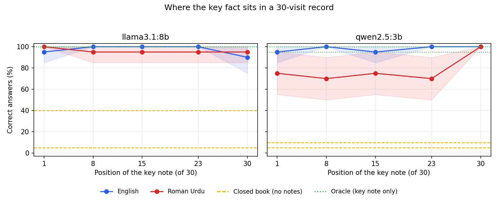

Experiment · Clinical AI · Long context
A small local AI lost facts anywhere but the last visit of a Roman Urdu record
A well-known study found that language models miss facts in the middle of a long prompt. I tested the same idea on a patient record with two small models that run on my laptop.
By Muzammal Hussain · 18 November 2026 · 4 min read
In Lost in the Middle, Liu and colleagues gave models 10 to 30 documents with the answer in only one of them. Accuracy was highest when that document came first or last and lowest in the middle. They tested English Wikipedia questions and models of 7B parameters and up. A clinic record is also a long list of documents, the visit notes, and the fact that matters, an allergy or a blood thinner, can be in any of them. So I asked whether qwen2.5:3b and llama3.1:8b find such a fact equally well wherever it sits, in English and in Roman Urdu.
Key findings
- No U-shape. llama3.1:8b found the fact 18 to 20 times out of 20 at every position, in both languages. qwen2.5:3b did the same in English.
- qwen2.5:3b in Roman Urdu was right 20 of 20 times only when the fact was in the last visit, and 14 or 15 of 20 anywhere earlier. Given the key note alone, it was right 20 of 20.
- The misses were not random. Two facts failed at 4 of 5 positions, and in 9 misses the reply was a routine sentence, or part of one, copied from another visit.
- The worst miss: for a patient on warfarin, it answered that the patient takes no medicine at every position except the last.
What I did
I wrote 20 fictional safety facts, such as a rash after diclofenac, a pacemaker, warfarin, numbness in the saddle area or 34 weeks of pregnancy, each with a question. For each fact the code builds a record of 30 routine physiotherapy visits for low back pain. One visit holds the fact; the other 29 are the same for every position, so only the order changes. The Roman Urdu record is a line-by-line translation of the English one.
The fact went into visit 1, 8, 15, 23 or 30. Two checks frame the results: the question with no notes (how guessable is the answer?) and the key note alone (can the model read it?). Both models ran through Ollama on a MacBook M4 (16 GB) at temperature 0 with an 8,192-token context, and no prompt was cut. An answer counted as correct if it contained an accepted word, as in the paper. That makes 560 answers.
Results

| Model | Language | No notes | Key note only | Visit 1 | Visit 8 | Visit 15 | Visit 23 | Visit 30 |
|---|---|---|---|---|---|---|---|---|
| llama3.1:8b | English | 8 | 20 | 19 | 20 | 20 | 20 | 18 |
| llama3.1:8b | Roman Urdu | 1 | 20 | 20 | 19 | 19 | 19 | 19 |
| qwen2.5:3b | English | 2 | 19 | 19 | 20 | 19 | 20 | 20 |
| qwen2.5:3b | Roman Urdu | 1 | 20 | 15 | 14 | 15 | 14 | 20 |
Each cell is correct answers out of 20. The paper's U-shape did not appear. qwen2.5:3b in Roman Urdu looked like recency instead: only the last visit was safe, and the first was no better than the middle. The paper reports the same recency-only pattern for its smallest model, Llama-2 7B. With 20 facts the evidence is thin: against visit 30, visit 8 gives p = 0.03 and visit 1 p = 0.06 (exact McNemar). Against English, 6 facts were right only in English at visits 8 and 23, but after correcting for five positions no single difference is below 0.05.
The no-notes column matters too. llama3.1:8b answered 8 English questions with no record at all, such as "pacemaker" for the heart device and "warfarin" for the blood thinner, so part of its English score can come from guessing.
What the wrong answers looked like
| Fact | Question | qwen2.5:3b reply (Roman Urdu) |
|---|---|---|
| Takes warfarin | Which blood thinner? | "No dawa nahi batai gayi" / "No dawa leta hai" (no medicine) |
| Fell down the stairs | Where did the patient fall? | "Subah taqreeban ek ghanta kamar akri rehti hai" (a line about morning stiffness from another visit) |
| Epilepsy | Which condition causes the seizures? | "Kafreen ka bimarani" (not a real word) |
| Flying to Lahore on 3 March | Which city? | Replied in Chinese: Lahore, 23 March |
The warfarin case is the one that worries me. The other visits say "Koi nayi dawa nahi batai gayi" (no new medicines reported), and the model gave that back as the answer. A physiotherapist who trusted it would treat a patient on a blood thinner as if they took nothing. The Chinese reply named the right city, which the keyword scorer missed; by hand, visit 23 is 15 of 20.
Limitations
20 facts and one run per model at temperature 0, with one prompt wording. The records are synthetic, repetitive and about 1,500 to 2,500 tokens long, shorter than the paper's longest settings. Keyword scoring can miss a correct reply in another language or form, as it did once here. Some questions can be guessed without notes.
What I will test next
- Put the question both before and after the record, which the paper found helps some tasks.
- A record where a fact changes over time, such as a medicine started and later stopped.
Follows: Liu N. F., Lin K., Hewitt J., Paranjape A., Bevilacqua M., Petroni F., Liang P. (2023). Lost in the Middle: How Language Models Use Long Contexts. arXiv:2307.03172. Published in Transactions of the Association for Computational Linguistics. Models: Qwen2.5 3B and Llama 3.1 8B run locally with Ollama.